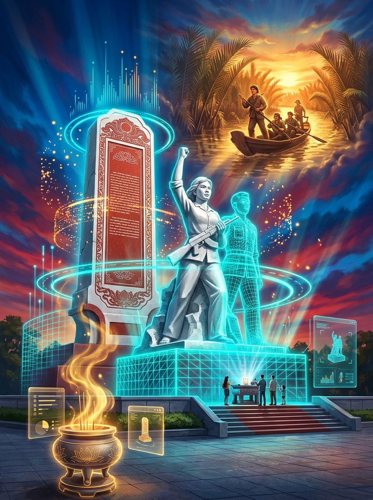

01 / 05
Hào Khí Đồng Khởi Quê Hương Song Phú
CHIẾN THẮNG CÁI SƠN (16/06/1960)
Đúng 16h30 ngày 16/06/1960 tại Cống Cây Sao (xã Song Phú), Đại đội 256 (Tiểu đoàn Lý Thường Kiệt) phối hợp cùng Du kích xã Song Phú ngụy trang cỏ và lá chanh dưới mương nước, tiêu diệt tại trận Tỉnh trưởng Vĩnh Long Khưu Văn Ba và bắt sống 3 trưởng ty đi cùng.

16/06
1960

Địa Chỉ Đỏ Cách Mạng • Xã Song Phú, Tỉnh Vĩnh Long
Di tích Chiến thắng Cái Sơn
Đầu năm 1960, chính quyền Ngô Đình Diệm ráo riết dồn dân lập Khu trù mật Cái Sơn tại xã Song Phú nhằm kìm kẹp nhân dân và đàn áp phong trào cách mạng. Trước tình hình đó, Tỉnh ủy Vĩnh Long chỉ đạo Đại đội 256 (Tiểu đoàn Lý Thường Kiệt) phối hợp cùng du kích xã Song Phú lập kế hoạch phục kích tiêu diệt tên Tỉnh trưởng ác ôn Khưu Văn Ba.
Trận địa được bố trí tại khu vực Cống Cây Sao (cách cầu Rạch Rừng khoảng 300m, cách ngã tư Thợ Ty khoảng 120m). Những chiến sĩ trẻ như Năm Đa (21 tuổi) đã ngâm mình dưới mương bùn, ngụy trang bằng cỏ và lá chanh suốt nhiều giờ liền, làm nên trận đánh thần tốc lúc 16h30 ngày 16/06/1960: tiêu diệt viên tỉnh trưởng đầu tiên của chính quyền Sài Gòn ở miền Nam và bắt sống 03 trưởng ty đi cùng.
Dấu ấn Chiến thắng 16/06/1960
Bốn yếu tố cốt lõi làm nên trận phục kích mẫu mực tại Cống Cây Sao, xã Song Phú — đập tan âm mưu Khu trù mật và thổi bùng ngọn lửa Đồng Khởi Vĩnh Long.
★ ★ ★


⭐
CÁI SƠN
16h30 • 1960
Trải Nghiệm Tương Tác Số Hóa 3D
Sa bàn 3D Cống Cây Sao & Mô hình 360°
WEBGL 3D REAL-TIME
1. Sa Bàn 3D Phục Kích Cống Cây Sao (5 Bước)
Mô phỏng trực quan 5 mốc diễn biến từ lúc ém quân dưới mương lá chanh đến khoảnh khắc nổ súng 16h30 và dựng cờ chiến thắng.

XOAY 360° + HOLOGRAM2. Mô Hình 3D Bia & Tượng Đài Chiến Thắng
Xoay 360° bằng ngón tay trên điện thoại, bật/tắt lưới đa giác Hologram để khảo sát kiến trúc Tượng đài Cái Sơn.
 MODEL 3D NHÂN VẬT
MODEL 3D NHÂN VẬT
3. Mô Hình 3D Chiến Sĩ Năm Đa & Xe Mục Tiêu
Quan sát trực quan trang phục áo xanh lá cây đậm, khăn rằn Nam Bộ, lá chanh ngụy trang và xe chỉ huy Khưu Văn Ba.
Hồ sơ Nhân vật, Vũ khí & Di tích
Khám phá danh mục số hóa các nhân vật lịch sử, lực lượng tham chiến, vũ khí ngụy trang và hạng mục kiến trúc tại Di tích Chiến thắng Cái Sơn.
Hình ảnh Di tích & Tư liệu Lịch sử
Hình ảnh thực tế Bia Chiến thắng Cái Sơn tại xã Song Phú, phim tư liệu nhân chứng và không gian số hóa 3D của tuổi trẻ Xã Đoàn Song Phú.
1. Bia & Tượng đài Chiến thắng Cái Sơn ngày nay
▶
2. [Video] Nhân chứng kể cách ngụy trang lá chanh
3. Phối cảnh Số hóa 3D Địa chỉ đỏ Cái Sơn
4. Tái hiện chiến sĩ phục kích tại Cống Cây Sao
▶
5. [Video] Tầm vóc chiến lược: Diệt Tỉnh trưởng đầu tiên

6. Ấn phẩm Tuyên truyền Số hóa — Xã Đoàn Song Phú
Chuyên đề & Tư liệu Lịch sử
Các bài nghiên cứu, hồi ký nhân chứng và phân tích nghệ thuật quân sự trận Cái Sơn 16/06/1960.